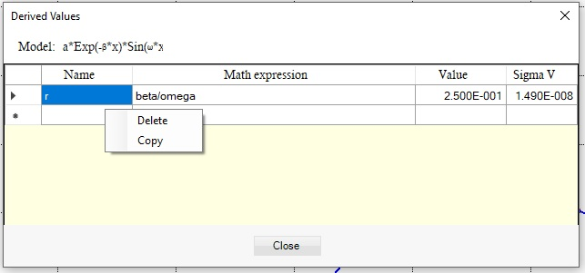
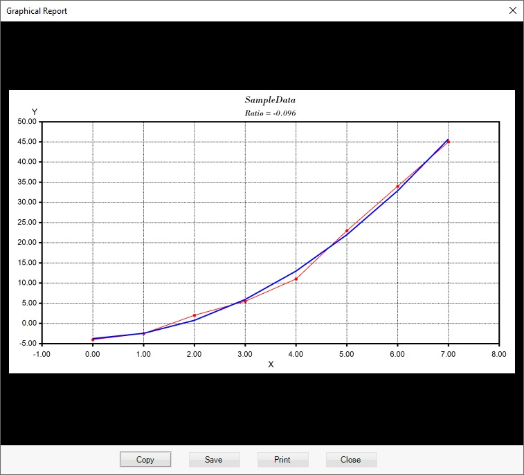

Derived values
Sometimes the values we are interested in are not exactly the model parameters but a function of them. In those cases you can use derived values.
Choose Analysis -> Derived values from the menu, press Ctrl+D keys or right click on the parameters table and select Derived values:

The Derived values dialog opens. Enter name of the derived value and the math expression, which must include only parameters of the model and number constants:

Once the math expression is entered the value and its uncertainty is calculated. The value is update every time you open the dialog.
To delete a derived value or to copy it to the clipboard open the context menu with right click on the mouse:

You can make the derived values to be shown on the graphical report by selecting this option by pressing Derived values button on the graphical report dialog:


Derived values are saved and loaded as part of the project and also included in the regression results log.
NOTE: Derived values for the model cannot be changed if there are records in the regression results log.